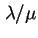

Next: กฎของ Little
Up: กระบวนการเกิด-ดับ และระบบคิว
Previous: แถวคอย
Contents
Index
อัตราการเปลี่ยนแปลงสถานะของระบบ  มีค่าเท่ากับ
มีค่าเท่ากับ
จากทฤษฎี 4.1 เราสามารถแสดงค่าความน่าจะเป็นที่มี  งานในระบบเท่ากับ
งานในระบบเท่ากับ
ค่า  เรียกว่าค่าความหนาแน่นของทราฟฟิก และแสดงด้วยตัวอักษร

เนื่องจากผลรวมของความน่าจะเป็นมีค่าเท่ากับ 1 เราสามารถหาค่าความน่าจะเป็นที่ไม่มีงานในระบบได้
แทนค่า  ใน
ใน  เราจะได้
เราจะได้
เนื่องจาก มีการกระจายแบบ Geometric เราสามารถพิสูจน์สมการต่อสำหรับค่าอื่นๆ ในคิว M/M/1
ค่าภาระงานบองเครื่องบริการ (Server Utilization) สามารถหาได้จากความน่าจะเป็นที่มีงานหนึ่งหรือมากกว่า
 |
(4.18) |
ค่าเฉลี่ยของงานในระบบมีค่าเท่ากับ
ค่าความแปรปรวนของค่าเฉลี่ยของงานในระบบมีค่าเท่ากับ
ความน่าจะเป็นที่จะมีงาน งานหรือมากกว่า
ค่าเวลาตอบสนอง (Response Time) สามารถคำนวณจากกฎของ Little
Subsections
Next: กฎของ Little
Up: กระบวนการเกิด-ดับ และระบบคิว
Previous: แถวคอย
Contents
Index
Vara Varavithya
2002-03-09